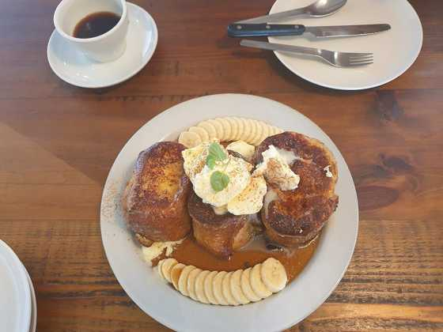
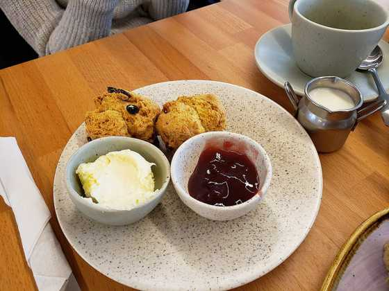
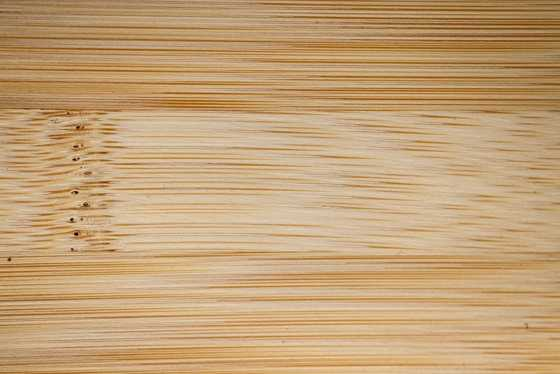
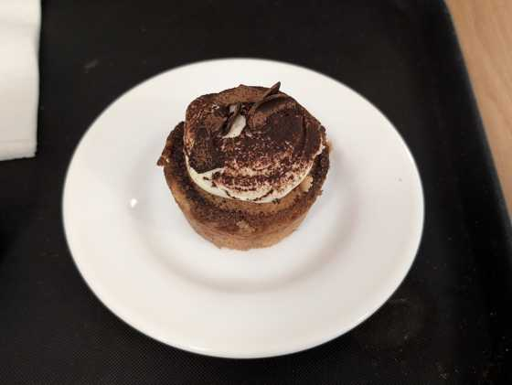
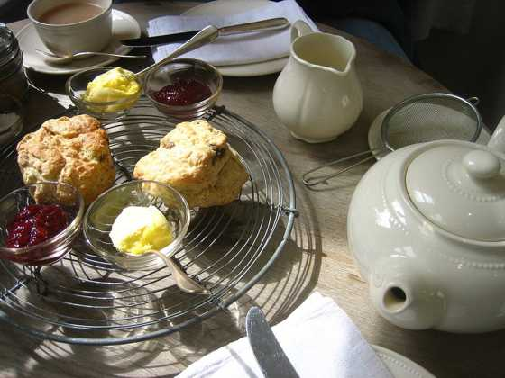

福岡県田川郡川崎町 / ログハウスのカフェ
ＬＯＧカフェＳＡＲＡ
丸太の温もりに包まれて、ひと息つく木のカフェ。
ログハウスの店内で、コーヒーや甘いものをゆっくり。川崎町の木のぬくもりをイメージしたサンプルページです。
このページの写真はフリー素材のイメージで、店舗の実際の商品・外観・店内ではありません。他地域で撮影されたものや、撮影地が不明なものを含みます。
丸太の家の、小さなカフェ
店名の「LOG」は丸太のこと。ログハウスのカフェとして紹介されています。ここでは、木に囲まれた空間で過ごす時間を、制作側のイメージで表現しました。
- ログハウスのカフェ(ホットペッパーグルメ掲載のキャッチコピー「ログハウスのオシャレなカフェ」より)
- 席数は12席と掲載されています(ホットペッパーグルメ)
- ウッドデッキがあり、Wi-Fiが利用できると掲載されています(ホットペッパーグルメ)
- お支払いはPayPayのみと掲載されています(最新はお店にご確認ください)
「SARA」の意味やお店の始まりについては確認できていないため、載せていません。

メニュー
具体的なメニューや価格は確認できていないため、準備中です。下の写真はドリンクやスイーツのイメージです。









口コミ
以下は制作側が創作した「イメージ例」で、実際のお客様の声ではありません。
イメージ例
木の香りがして、ほっとできる空間でした。コーヒーを飲みながら、ついゆっくりしてしまいました。
ご来店のお客様(例)
イメージ例
ログハウスの雰囲気が素敵で、友人とのおしゃべりにぴったり。甘いものも楽しみです。
ご来店のお客様(例)
イメージ例
ドライブの途中に立ち寄れる、あたたかい雰囲気のお店。また近くに来たら寄りたいです。
ご来店のお客様(例)
アクセス・お店の情報
- 店名
- ＬＯＧカフェＳＡＲＡ
- 住所
- 福岡県田川郡川崎町川崎2666-1
- 電話
- 準備中
- 営業時間
- 準備中
- 定休日
- 準備中
- @logcafesara_66
営業時間は掲載サイトによって異なるため、お出かけ前にInstagram等でご確認ください。